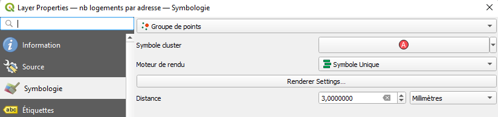
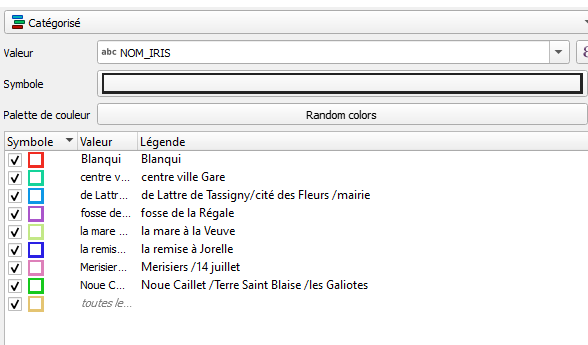
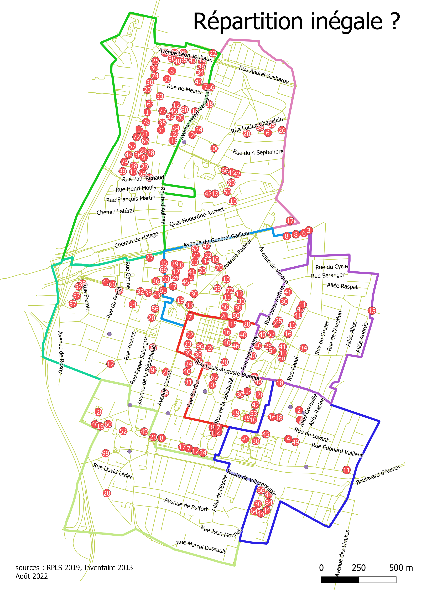
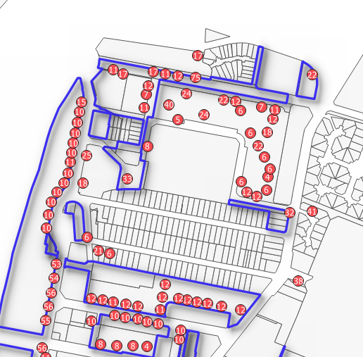
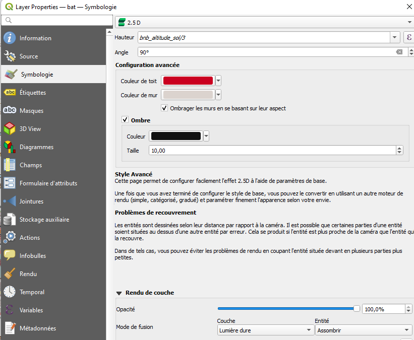

Saisir plus d’une résidence avec plusieurs attributs, faire évoluer la méthode de saisie.
On utilise désormais l’éditeur JOSM
Utiliser l’identification simple
exercice 1 : sur un calque vierge, utiliser mode s (sélectionner), a (ajouter), et w (modifier)
exercice 2 : osmecum intégrer le bati
Essayer par exemple de fusionner deux points, un point et une ligne… en suivant les indications de la fiche
Le validateur permet de repérer les erreurs possibles
La problématique : que cartographier ?
Rappel : la carte voulue est une carte des résidences, donc on va essayer de cerner ces résidences.
Pour celà nous avons un outil interne à la commune : le répertoire du patrimoine HLM dont on va pouvoir reprendre la sectorisation.
resid <- read.csv("data/bailleurInventaireCorrigeUTF8.csv", fileEncoding = "UTF-8")
knitr::kable(resid)| bailleurs | secteurs | numSecteur | residence | rue.si.différente.de.nom.résidence | numeros |
|---|---|---|---|---|---|
| BONDY HABITAT | Secteur Blanqui | 1 | Carnot | 11 | |
| BONDY HABITAT | Secteur Blanqui | 1 | Apollinaire | 2-20 | |
| BONDY HABITAT | Secteur Blanqui | 1 | Blanqui | 35-43 45b-51b 73-73 | |
| BONDY HABITAT | Secteur Blanqui | 1 | Eluard | 2-16 | |
| BONDY HABITAT | Secteur Blanqui | 1 | Beauvoir | 1-5 2-12 | |
| BONDY HABITAT | Secteur Blanqui | 1 | Simone de Beauvoir | 7 | |
| BONDY HABITAT | Secteur Blanqui | 1 | Blanqui bis | 128-132 bis | |
| BONDY HABITAT | Secteur Blanqui | 1 | Dunant | 1 2-8 | |
| BONDY HABITAT | Secteur Blanqui | 1 | Martin Luther King | 2-6 8-10 | |
| BONDY HABITAT | Secteur Blanqui | 1 | Lyssandre | place | |
| 3F IMMOBILIER | Secteur Blanqui | 1 | Henri Barbusse | 42-50 | |
| 3F IMMOBILIER | Secteur Blanqui | 1 | Henri Barbusse | 28-38 | |
| 3F IMMOBILIER | Secteur Blanqui | 1 | Gaston Deferre | 18-20 | |
| BONDY HABITAT | Secteur Centre Ville/Gare | 2 | Lamartine | Polissard et Galliéni | 2 et 80 |
| BONDY HABITAT | Secteur Centre Ville/Gare | 2 | Guesde | 15-23 | |
| BONDY HABITAT | Secteur Centre Ville/Gare | 2 | Le Potager | 2-22 | |
| BONDY HABITAT | Secteur Centre Ville/Gare | 2 | Albert Thomas | ensemble | |
| BONDY HABITAT | Secteur Centre Ville/Gare | 2 | Furci | 1-7 2-16 | |
| BONDY HABITAT | Secteur Centre Ville/Gare | 2 | Egalité | un seul numéro | |
| 3F IMMOBILIER | Secteur Centre Ville/Gare | 2 | Guesde | 49-53 | |
| ICF LA SABLIERE | Secteur Centre Ville/Gare | 2 | Polissard | 24-28 | |
| ANTIN RESIDENCE | Secteur Centre ville/Gare | 2 | Guesde | 61-71 | |
| BATIGERE | Secteur Centre ville/Gare | 2 | Jean Jaurés | 14-16 | |
| BATIGERE | Secteur Centre ville/Gare | 2 | République | 20 | |
| OSICA | Secteur Centre ville/Gare | 2 | Résidence du Breuil | 1-7 | |
| SOFILOGIS | Secteur Centre ville/Gare | 2 | Guesde | 60-64 | |
| BONDY HABITAT | Secteur de Lattre de Tassigny | 3 | Résidence de ’Ourcq | De Lattre de Tassigny | 2bis – 4 bis |
| BONDY HABITAT | Secteur de Lattre de Tassigny | 3 | De Lattre | 2-8 10-18 20-24 32-36 38-48 60-62 64-70 | |
| BONDY HABITAT | Secteur de Lattre de Tassigny | 3 | Cité des Fleurs et du stade | facile | |
| BONDY HABITAT | Secteur de Lattre de Tassigny | 3 | Polissard | 17-19 21-23 25-27 | |
| BONDY HABITAT | Secteur de Lattre de Tassigny | 3 | Neuburger | place | |
| EFIDIS | Secteur De Lattre de Tassigny | 3 | Résidence des Cerises | Robert Douvillez | 2 |
| SOFILOGIS | Secteur Fosse de la Régale | 4 | Résidence Rendez-Vous | 45-47 | |
| BONDY HABITAT | Secteur La Mare a la Veuve | 5 | Résidence du Levant | la Paix | 27 – 31 |
| BONDY HABITAT | Secteur La Mare a la Veuve | 5 | Moleret | 2 | |
| 3F IMMOBILIER | Secteur Fosse de la Régale | 4 | Cos Résiduel | Barbusse | 121 |
| ICF LA SABLIERE | Secteur Fosse de la Régale | 4 | Blanqui | 125 | |
| BONDY HABITAT | Secteur La Mare a la Veuve | NA | Salengro | 156-164 | |
| BONDY HABITAT | Secteur La Mare a la Veuve | 5 | Bobillot | 16-20 17-27 29-3 | |
| ESPACE HABITAT | Secteur La Mare a la Veuve | 5 | Résidence l’Europe | Salengro | 107-117 |
| 3F IMMOBILIER | Secteur la Remise a Jorelle | 6 | Liberté | Paul Lafargue | 1-27 2-6 |
| 3F IMMOBILIER | Secteur la Remise a Jorelle | 6 | La Bondynoise | blanqui | 140 |
| 3F IMMOBILIER | Secteur la Remise a Jorelle | 6 | Edouard Vaillant | 153-155 | |
| ICF LA SABLIERE | Secteur la Remise a Jorelle | 6 | Villemomble | 132-168 | |
| FRANCE HABITATION | Secteur la Remise a Jorelle | 6 | Résidence des arts | 15 | |
| ANTIN RESIDENCE | Secteur la Remise a Jorelle | 6 | Salengro | 20-22 | |
| ANTIN RESIDENCE | Secteur la Remise a Jorelle | 6 | Résidence Gabrielle | Edouard Vaillant | 166-170 |
| 3F IMMOBILIER | Secteur Merisiers/14 Juillet | 7 | Baudelaire/Villon | 2-16 33-35 et pour baudelaire 1-5 | |
| 3F IMMOBILIER | Secteur Merisiers/14 Juillet | 7 | 14 Juillet | Chapelain, Ronsard, Villon | 40 1 8-12 |
| 3F IMMOBILIER | Secteur Merisiers/14 Juillet | 7 | Fontaine | Fontaine Marx Dormoy et Groussier | 40-50 10-20 1-5 |
| IRP | Secteur Merisiers/14 Juillet | 7 | La Résidence Maurice Benhamou - Varagnat | 12-17 et 12 | |
| LOGIS TRANSPORTS | Secteur Merisiers/14 Juillet | 7 | La Résidence Maurice Benhamou | 10-12 | |
| 3F IMMOBILIER | Secteur Terre-Saint Blaise/Noue Caillet | 8 | Terre saint Blaise | Francs Aubiers Terre Saint Blaise Rabelais Escholiers Picrochole, passe aux daims, grandgousier, léon jouhaux | facile |
| 3F IMMOBILIER | Secteur Terre-Saint Blaise/Noue Caillet | 8 | Varagnat | Léon Jouhaux | 19 |
| BONDY HABITAT | Secteur Terre-Saint Blaise/Noue Caillet | 8 | Léon Blum | 1-7 9-17 19-43 | |
| BONDY HABITAT | Secteur Terre-Saint Blaise/Noue Caillet | 8 | Versailles | 63-71 | |
| BONDY HABITAT | Secteur Terre-Saint Blaise/Noue Caillet | 8 | Jean Lebas | 3-11 2-16 | |
| BONDY HABITAT | Secteur Terre-Saint Blaise/Noue Caillet | 8 | Germaine Tillion | 3-7 | |
| BONDY HABITAT | Secteur Terre-Saint Blaise/Noue Caillet | 8 | Suzanne Buisson | 1-9 11-15 17-27 2-12 14-26 | |
| BONDY HABITAT | Secteur Terre-Saint Blaise/Noue Caillet | 8 | Moulin | Léon Blum | 28-32 |
| OFFICE PUBLIQUE DEPARTEMENTALE DE SEINE SAINT DENIS | Secteur Terre-Saint Blaise/Noue Caillet | 8 | Raymond Aubrac | Blum | 2 |
| OFFICE PUBLIQUE DEPARTEMENTALE DE SEINE SAINT DENIS | Secteur Terre-Saint Blaise/Noue Caillet | 8 | Noue Caillet | Moulin Paul Renaud | 6-12 1-27 et 38-40 |
Ce fichier va saisir de base de saisie.
Question : De quand date le principe de libre communication de la matrice cadastrale ?
Voir les commentaires
https://pasq.fr/fichier-des-proprietes-des-personnes-morales
pour le RPLS au département
Quels traitements faut-il appliquer au RPLS téléchargé ?
library(sf)
library(mapsf)
data <- read.csv2( "data/RPLS2019_detail_IDF_DEP_93.csv", encoding = "UTF-8")
# 1er traitement
data <- data [data$CODEPOSTAL == '93140',]
# 2e traitement
str(data [, c("longitude", "latitude")])
data <- st_as_sf(data, coords =c("longitude", "latitude"), crs = 4326)
# 3e traitement
st_write(data,"data/logement.gpkg","RPLS4326", delete_layer = T)charger 2 couches (RPLS et quartiersBailleurs dans le gpkg logement)
symbologie groupe de points pour le RPLS

 - tuile osm ou rues de la première carte

 Donner les sources de cette carte
Examiner le RPLS, que peut-on mettre comme informations ?
Qu A partir d’un exemple sur la carte 25 rue Fontaine : - on identifie son adresse, son nom, sa hauteur, le bailleur, le nombre d’appartements, l’age. - on vérifie cohérence hauteur et nb appartements Dans ce cas, comme il n’existe pas dans le répertoire, on rajoute la ligne.
style catégorisé, reste-t-il beaucoup à saisir… on le fera demain
comparer également avec le tableau
Jouer avec les paramétrages

extraction d’OSM : https://osmbuildings.org/
Cours P8 G2M 2022 QGIS OSM - Bailleurs sociaux Bondy
{kind=link}